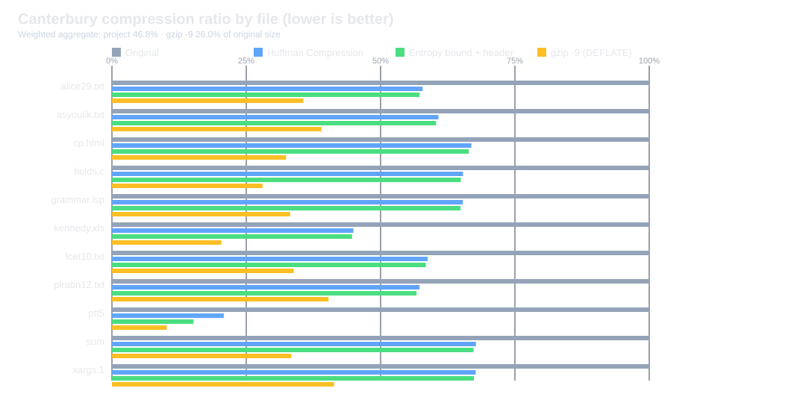

I watch quite a bit of low-level and assembly programming content in my free time to generate ideas for projects. I found this resource from a content creator, y4spr, which highlights many project ideas, including implementing a Huffman coding compression algorithm. I chose this project because it seemed fun to write some classic C (and because compression algorithms are very cool). Huffman coding is not especially difficult to implement, and its many possible variations meant my project would not feel like a regurgitation of a Wikipedia article.
To understand this project's implementation details, it helps to introduce Huffman coding for readers who are not already familiar with it. Huffman coding is a lossless compression technique that represents symbols with variable-length binary codes. Frequent symbols receive short codes and rare symbols receive long codes, which reduces the average number of bits needed per symbol. A "symbol" is intentionally abstract: it can be a character, a word, or, as in this project, a single byte.
To avoid the jargon, consider the word "ABRACADABRA", which has 11 letters: five As, two Bs, two Rs, one C, and one D. With five distinct letters, a fixed-length scheme needs 3 bits for every letter, or \(11 \times 3 = 33\) bits in total. A Huffman code gives the common letter a short code and the rare letters longer ones:
$$ \begin{array}{c|c|c|c} \textbf{Letter} & \textbf{Count} & \textbf{Fixed} & \textbf{Huffman} \\ \hline \texttt{A} & 5 & \texttt{000} & \texttt{0} \\ \texttt{B} & 2 & \texttt{001} & \texttt{100} \\ \texttt{C} & 1 & \texttt{010} & \texttt{101} \\ \texttt{D} & 1 & \texttt{011} & \texttt{110} \\ \texttt{R} & 2 & \texttt{100} & \texttt{111} \end{array} $$Weighting each code length by how often the letter appears, the message now costs
$$5(1) + 2(3) + 1(3) + 1(3) + 2(3) = 23 \text{ bits},$$about 30% fewer bits than the fixed-length encoding, with nothing lost. Written out in full, the encoded message is:
$$ \underbrace{\texttt{0}}_{\texttt{A}}\, \underbrace{\texttt{100}}_{\texttt{B}}\, \underbrace{\texttt{111}}_{\texttt{R}}\, \underbrace{\texttt{0}}_{\texttt{A}}\, \underbrace{\texttt{101}}_{\texttt{C}}\, \underbrace{\texttt{0}}_{\texttt{A}}\, \underbrace{\texttt{110}}_{\texttt{D}}\, \underbrace{\texttt{0}}_{\texttt{A}}\, \underbrace{\texttt{100}}_{\texttt{B}}\, \underbrace{\texttt{111}}_{\texttt{R}}\, \underbrace{\texttt{0}}_{\texttt{A}} $$The spaces and labels are only for readability. The real output is the unbroken string 01001110101011001001110, and a decoder can still split it back into letters.
At a glance, this technique might seem sound, but on closer inspection, you may notice a strange
pattern. Why are certain bit sequences skipped? Why not use short codes such as 1,
00, or 11 before using longer codes such as 100,
101, 110, or 111? Those shorter codes would seem to
let us combine more bits. So why don't we use them?
Suppose we instead assign these short codes:
$$ \begin{array}{c|cccc} \text{Letter} & \texttt{A} & \texttt{B} & \texttt{R} & \texttt{C} \\ \hline \text{Code} & \texttt{0} & \texttt{1} & \texttt{00} & \texttt{11} \end{array} $$Now the four-bit string \(\texttt{0011}\) has several valid readings. Since there are no separators between codes, the decoder cannot tell which letter boundaries were intended:
$$ \begin{aligned} \texttt{0011} &= \underbrace{\texttt{0}\,\texttt{0}\,\texttt{1}\,\texttt{1}}_{\texttt{AABB}} \\ &= \underbrace{\texttt{0}\,\texttt{0}\,\texttt{11}}_{\texttt{AAC}} \\ &= \underbrace{\texttt{00}\,\texttt{1}\,\texttt{1}}_{\texttt{RBB}} \\ &= \underbrace{\texttt{00}\,\texttt{11}}_{\texttt{RC}} \end{aligned} $$The ambiguity comes from one codeword being the beginning of another: \(\texttt{0}\) is a prefix of \(\texttt{00}\), and \(\texttt{1}\) is a prefix of \(\texttt{11}\). When the decoder reads a \(\texttt{0}\), it cannot know whether the string it is reading is A or the start of R.
The skipped sequences in the earlier table are the price of avoiding this. Once a bit sequence is
assigned to a letter, nothing longer that begins with it can be used. Giving A the code
0 rules out every code that starts with 0, which leaves only sequences
starting with 1 for the other four letters. Codes with this property are called
prefix codes, and they let a decoder recognize each letter the instant its last bit arrives,
with no separators and no looking ahead.
The unused sequences are not wasted. Every open bit sequence can be extended in two ways by appending
a 0 or a 1. Leaving 1 unassigned therefore opens two new
positions, 10 and 11. Leaving both of those open creates four positions:
100, 101, 110, and 111. The pattern continues as
long as positions remain open; each unused sequence becomes the prefix of longer codes below it.
This tree is more than a visualization of how the codes are formed; it is also a data structure we can use to derive Huffman codes, and it is central to the algorithm's efficiency.
This is the core of the algorithm. At a high level, these are the steps basic Huffman compression algorithms perform. The simplicity and optimality of this method make it a popular component in compression algorithms. This raises an obvious question: if Huffman coding produces optimal codes, why do other compression methods exist? Does it not "solve" file compression?
Not quite. The outlined Huffman coding algorithm produces optimal codes for a set of symbol frequencies, but it does not take advantage of patterns between neighboring symbols. For example, a file containing many repeated sequences could be compressed further by replacing them with references to earlier occurrences. For instance, after writing the first \(\texttt{ABC}\), an LZ77 encoder can refer back three symbols to copy the next six:
$$ \texttt{ABCABCABC}\quad\longrightarrow\quad \texttt{ABC}\,\langle 3,6\rangle $$The pair \(\langle 3,6\rangle\) means “copy six symbols from three positions back,” so a repeated sequence can be represented by a reference instead of being written out again. The exact bit savings depend on how the reference is encoded. DEFLATE combines this kind of LZ77 reference with Huffman coding: LZ77 finds repeated patterns, then Huffman coding gives short codes to the resulting symbols and references. Huffman coding is therefore one part of a larger compression algorithm.
That does not mean Huffman coding is only useful in toy compression algorithms. It serves a purpose and does some of the heavy lifting in compression tools used every day. Although I made this project as a fun, educational portfolio piece, Huffman coding also works well as a standalone algorithm.
A decoder needs the codebook, so the compressed file has to carry enough information to rebuild it. There are two conventional options:
Both are acceptable for large files, but costly for small ones, where the header can outweigh the data it describes. Canonical Huffman coding lets us store much less.
To see how, take the 15-letter message DDDDDDCCCCAAABB: six Ds, four Cs, three As, and
two Bs. Building a Huffman tree merges the two lightest trees each time. B (2) and A (3) combine
into a tree of weight 5, which then combines with C (4) to make a tree of weight 9. Finally, D (6)
joins that tree to make the root. If we label the lighter branch 0 and the heavier branch
1 at every merge, the tree produces these codes:
Now notice which part of this table actually matters. The compressed size depends only on the
lengths: \(6(1) + 4(2) + 2(3) + 3(3) = 29\) bits. The specific bit patterns are an accident of
how we happened to label the branches. If we had labeled the heavier branch 0 instead,
we would get D = 1, C = 01, B = 001, A = 000.
These are different codes, but they have the same lengths, are still prefix codes, and compress the
message to the same 29 bits.
The patterns are arbitrary, so the lengths are all we need. That suggests a trick: instead of letting the tree decide the patterns, we agree on a fixed rule for assigning them from the lengths. If the compressor and decompressor both know the rule, the file only needs to store the lengths, and both sides can rebuild identical codes. This is canonical Huffman coding. The Huffman tree is still built, but only to find each symbol's code length, and then it is thrown away.
The rule for finding canonical Huffman codes is:
The two operations each have a job. Adding one moves to the next unused bit pattern of the same length, so no two symbols collide. Appending zeros when the length grows moves us down into the longer codes, past every pattern that starts with a code we have already handed out, so the result stays a prefix code. Appending zeros is the same as shifting left, so formally, if \(c_k\) is the \(k\)-th code in sorted order and \(\ell_k\) is its length, then
$$c_0 = 0, \qquad c_{k+1} = (c_k + 1) \ll (\ell_{k+1} - \ell_k)$$The shift is zero when two neighbors have the same length, and larger when the length jumps. Let's run this on our message. All we are given are the lengths: D has 1, C has 2, and A and B have 3. Sorted by length and then alphabetically, the order is D, C, A, B:
$$ \begin{array}{c|c|l|c} \textbf{Letter} & \ell & \textbf{Calculation} & \textbf{Canonical code} \\ \hline \texttt{D} & 1 & c_0 = 0 & \texttt{0} \\ \texttt{C} & 2 & (\texttt{0} + 1) \ll 1 = \texttt{1} \ll 1 & \texttt{10} \\ \texttt{A} & 3 & (\texttt{10} + 1) \ll 1 = \texttt{11} \ll 1 & \texttt{110} \\ \texttt{B} & 3 & (\texttt{110} + 1) \ll 0 & \texttt{111} \end{array} $$
Compare this with the tree's codes. D and C are unchanged, but
A and B have swapped: the tree gave B = 110 and
A = 111, while the canonical rule gives A = 110 and B = 111.
That is fine, since the lengths are identical and the total is still 29 bits. What we gained is that
these codes can be recomputed by anyone who knows the lengths.
This is the payoff. The header stores neither codes nor tree structure; it stores only one length per
possible byte. For this message, the 256-entry length table holds a 1 for D, a
2 for C, a 3 for A, a 3 for
B, and a 0 everywhere else (zero meaning the symbol never appears). Because
each entry is a single small number, the table is the same size no matter what the data looks like.
But we are still storing 256 bytes. Is that really shorter? Compared with storing the codes, yes. A code can be up to 15 bits and needs its length stored beside it, so storing codes would cost around three bytes per symbol instead of one. This is also safer because the decoder does not have to trust codes supplied by the file; it validates the lengths and generates the codes itself.
This project is a byte-oriented compressor and decompressor written in C. Every input byte is a symbol
in the range 0-255. The command-line entry point, main.c, accepts -e to
encode or -d to decode, followed by the input file and the output file.
The encoder follows the usual textbook pipeline: count byte frequencies, build a Huffman tree, get each symbol's code length from its depth in the tree, assign codes, and write a header followed by the encoded data. Compared with a basic textbook implementation of Huffman coding, I added a few features that I wanted to implement:
The sections below follow the encoder from start to finish, then cover the decoder. Each one shows the code that carries the idea, starting with the first pass over the input.
count_frequencies() makes a pass over the file and counts how
often each byte appears. It also keeps track of the file's total size, which is written into the
header later. It is easiest to count the frequencies by grouping them into buckets indexed by their
value.
// ...uint64_t frequencies[256], symbol defined above.
// Read bytes until EOF, counting each symbol and the total input size.
while ((symbol = fgetc(input)) != EOF) {
if (*total_symbols == UINT32_MAX) {
return EXIT_FAILURE;
}
++frequencies[symbol];
++(*total_symbols);
}
When I first wrote this loop, I made symbol a
uint8_t instead of an int, reasoning
that a byte only holds values from 0 to 255 (even though using a smaller type for one local variable
saves essentially nothing). This caused the loop never to terminate.
The standard library defines EOF as -1, and storing that in a
uint8_t wraps it around to 255. The comparison against
EOF is then between 255 and -1, which is never true, so the loop never exits and
frequencies[255] is incremented over and over. Turning on stricter
compiler warnings (-Wall or -Wextra) and thinking more carefully about the
types would likely have caught it. This is why fgetc returns an int in the
first place. It was a novice mistake, and it taught me to be more cautious when handling unsigned
integers.
I followed the standard approach for constructing a Huffman tree because it is relatively straightforward. Each symbol is initially represented by a leaf node, and all nodes are stored in a priority queue ordered by increasing symbol frequency. The algorithm repeatedly removes the two nodes with the lowest frequencies and combines them into a new "internal" node. This node has no associated symbol; instead, its frequency is the sum of its children's frequencies. The two removed nodes become its children, and the new internal node is inserted back into the priority queue.
For example, take the earlier input, where B appears twice, A three times, and C four times. The heap removes B and A, then receives their parent, whose frequency is five:
$$ \begin{array}{|c|c|c|} \hline \texttt{B}\!:\!2 & \texttt{A}\!:\!3 & \texttt{C}\!:\!4 \\ \hline \end{array} $$ $$ \Downarrow \; \text{pop } \texttt{B} \text{ and } \texttt{A}, \; \text{push } 2 + 3 = 5 $$ $$ \begin{array}{|c|c|} \hline \texttt{C}\!:\!4 & 5 \\ \hline \end{array} $$
The 5 is an internal node whose left pointer refers to
B and whose right pointer refers to A, so the two leaves are
still reachable through it. Repeating this until one entry remains leaves the root of the Huffman
tree, with each byte represented by a leaf beneath it.
In essence, this algorithm begins with a collection of single-node trees and repeatedly combines them until only one tree remains. This construction produces an optimal Huffman code in \(O(k \log k)\) time, where \(k\) is the number of distinct bytes in the input.
C does not provide standard-library data structures like C++ does, so I wrote my own min-heap priority
queue for this algorithm. I could have used a third-party library, but implementing data structures is
fun. I will not discuss the fairly standard min-heap implementation in detail here. Its two public
functions are heap_insert(), which takes a node, and heap_pop_top(), which
returns one. Each node is represented by a basic C struct that stores a frequency, a symbol, and
pointers to its
left and right children.
typedef struct huffman_node {
uint64_t frequency;
struct huffman_node *left;
struct huffman_node *right;
uint8_t symbol;
} huffman_node;
I ordered the struct members with memory alignment in mind, placing larger members before smaller ones to minimize padding and reduce memory overhead.
I defined the min-heap comparator to order nodes from least to most frequent. We can therefore allocate a leaf for each symbol and insert it into the heap:
// Insert one leaf for each symbol that occurs in the input.
for (size_t symbol = 0; symbol < SYMBOL_COUNT; ++symbol) {
if (frequencies[symbol] != 0) {
huffman_node *leaf = calloc(1, sizeof(*leaf));
if (leaf == NULL) {
release_heap_trees(&heap);
return EXIT_FAILURE;
}
leaf->frequency = frequencies[symbol];
leaf->symbol = (uint8_t)symbol;
heap_insert(&heap, leaf);
}
}
With the leaves in the min-heap, the encoder repeatedly removes the two nodes with the lowest frequencies and makes them the children of a new parent. It sets the parent's frequency to the sum of its children's frequencies before inserting it back into the priority queue. This process repeats until only the root of the Huffman tree remains:
// Repeatedly combine the two least frequent trees into one parent.
while (heap.size > 1) {
// Allocate before removing children so failure cleanup can find them.
huffman_node *parent = calloc(1, sizeof(*parent));
if (parent == NULL) {
release_heap_trees(&heap);
return EXIT_FAILURE;
}
parent->left = heap_pop_top(&heap);
parent->right = heap_pop_top(&heap);
parent->frequency = parent->left->frequency + parent->right->frequency;
heap_insert(&heap, parent);
}
The next step is to find each symbol's code length. Because the Huffman tree provides a simple way to determine these lengths, we define each symbol's code length as its depth in the tree. A recursive function can walk the tree and record that depth for every symbol.
build_code_lengths() walks the tree and records each byte's
depth as its code length. A file with only one distinct byte needs a one-bit code, even though
its lone leaf has depth zero. After recording the lengths, the tree has done its job and can be
freed.
// Leaves hold symbols; internal nodes always have two children.
if (root->left == NULL) {
// Tree depth gives the bit count. A lone symbol still needs one bit.
code_lengths[root->symbol] = (uint8_t)(depth == 0 ? 1 : depth);
return;
}
// Each branch adds one bit to the codes below it.
build_code_lengths(root->left, code_lengths, depth + 1);
build_code_lengths(root->right, code_lengths, depth + 1);
Although this function recurses over the tree, it uses only \(O(h)\) stack space, where \(h\) is the tree's height. Since the tree contains at most 511 nodes for 256 distinct symbols, stack usage is not a concern here.
Highly uneven byte frequencies can produce unbalanced Huffman trees and long codes. Although this is an edge case, it still needs to be addressed. This project caps code lengths at 15 bits to fit its representation and keep decoding simple, as DEFLATE does. Since shortening codes can make the prefix code invalid, the encoder repairs the length distribution before assigning canonical codes.
The optimal length-limited code can be found exactly with the package-merge algorithm, but it is more complex than necessary here. Instead, this project uses a fast heuristic that sacrifices a small amount of compression efficiency for simplicity and speed. The MiniZ-inspired heuristic below is how this project handles that repair.
MiniZ is a small C library for DEFLATE compression and decompression. It limits code lengths with a
simple heuristic rather than a more rigorous method like package-merge. I based my implementation on
the algorithm in MiniZ's tdefl_huffman_enforce_max_code_size. It works on a
histogram of code lengths rather than on the tree: histogram[L] is the number of
symbols with a code of length \(L\). It proceeds in three passes:
Pass 1: clamp. Every symbol with a length above \(L_{max}\) is moved into the \(L_{max}\) bucket. If nothing exceeded the limit, the original lengths are already valid and the function returns early. Otherwise the clamping has shortened some codes, so the Kraft sum may now exceed 1, which makes the code invalid.
Pass 2: repair the Kraft sum. To compare fractions exactly, the sum is scaled by \(2^{L_{max}}\) so that it is an integer:
$$ \begin{aligned} K &= \sum_{L=1}^{L_{max}} \text{histogram}[L] \, 2^{L_{max}-L} \\ \text{valid} &\iff K \le 2^{L_{max}} \end{aligned} $$While \(K\) is too large, the algorithm applies a repair step. It removes one symbol from the longest bucket and one from the longest non-empty shorter bucket (length \(L\)), then places two symbols at length \(L + 1\). In other words, one leaf at \(L_{max}\) and one at \(L\) become two leaves at \(L + 1\). The leaf count stays the same, but the sum falls by exactly one unit:
$$ \begin{aligned} -2^0 - 2^{L_{max}-L} + 2\cdot 2^{L_{max}-L-1} &= -1 \end{aligned} $$
// We use integer scaled values (by 2^MAX_CODE_LEN) for precise fractional numbers.
uint32_t target = 1u << MAX_CODE_LEN;
while (kraft_sum > target) {
int length = MAX_CODE_LEN - 1;
while (length > 0 && histogram[length] == 0) {
--length;
}
if (length == 0 || histogram[MAX_CODE_LEN] == 0) {
return EXIT_FAILURE;
}
--histogram[MAX_CODE_LEN];
// Lift next non-zero code to free up more space.
--histogram[length];
histogram[length + 1] += 2;
// Reduced the Kraft sum by 1.
--kraft_sum;
}
The loop terminates because each step lowers \(K\) by one. It fails only if there is no room to repair, which cannot happen when the symbol count is at most \(2^{L_{max}}\) (here, 256 versus 32,768).
Pass 3: reassign lengths. The histogram now describes a valid set of lengths, but not which symbol gets which length. Symbols are sorted by decreasing frequency with an insertion sort (at most 256 elements), and the shortest lengths are handed to the most frequent symbols first. This preserves the intuition that common symbols get short codes.
// Copy histogram back into code_lengths, most frequent symbols first.
size_t index = 0;
for (unsigned length = 1; length <= MAX_CODE_LEN; ++length) {
for (size_t i = 0; i < histogram[length]; ++i) {
code_lengths[symbols[index++]] = (uint8_t)length;
}
}
The result is not guaranteed to be optimal, but in practice it is close, and it only runs in the rare case where a code exceeded the limit.
After calculating the code lengths, the encoder validates them and sorts the symbols by increasing code length, breaking ties by byte value. This ordering allows us to assign canonical Huffman codes without storing the exact bit patterns generated during tree construction.
As was shown earlier, the assignment process is surprisingly simple. Rather than traversing the Huffman tree again, we can derive each code from the previous one. We increment the previous code, then shift it left when the next code is longer, appending zero bits to account for the additional length.
The recurrence is \(C_i = (C_{i-1} + 1) \ll (\ell_i - \ell_{i-1})\). In words, increment the previous code, then shift it left by the increase in code length. This recurrence makes assigning canonical codes straightforward and is used by many implementations.
The implementation follows this recurrence directly. For each sorted symbol, the encoder shifts current_code to account for any increase in code length, stores the resulting code alongside its length, and increments the code in preparation for the next symbol.
for (size_t index = 0; index < code_count; ++index) {
// Append zero bits when moving to a longer code length.
current_code <<= sorted_symbols[index].length - previous_length;
codes[sorted_symbols[index].symbol] =
(huffman_code){(uint16_t)current_code, sorted_symbols[index].length};
previous_length = sorted_symbols[index].length;
++current_code;
}
One advantage of designing a compression format is that you can choose its header, as long as the encoder and decoder use the same format. My header stores all 256 code lengths, which lets the decoder reconstruct the canonical codebook. It also stores the original number of symbols so the decoder knows exactly when to stop. The last payload byte may contain zero padding bits, so the decoder cannot use the end of the file alone to tell when the original message is complete. The format therefore starts with a fixed 260-byte header, followed by the encoded payload:
$$ \begin{array}{|c|c|c|} \hline \text{Code lengths} & \text{Original symbol count} & \text{Encoded payload} \\ \hline \ell_0\;\ell_1\;\cdots\;\ell_{255} & N_0\;N_1\;N_2\;N_3 & \text{compressed bits} \\ \hline 256\text{ bytes }(0\text{-}255) & 4\text{ bytes }(256\text{-}259) & \text{starts at byte }260 \\ \hline \end{array} $$Each \(\ell_s\) is the code length for byte value \(s\), with zero marking a byte that does not appear in the input. The four count bytes store \(N\) least-significant byte first, so \(N = N_0 + 2^8N_1 + 2^{16}N_2 + 2^{24}N_3\).
int write_header(FILE *output, const uint8_t code_lengths[SYMBOL_COUNT], uint32_t total_symbols) {
if (fwrite(code_lengths, 1, SYMBOL_COUNT, output) != SYMBOL_COUNT) {
return EXIT_FAILURE;
}
for (unsigned byte = 0; byte < 4; ++byte) {
if (fputc((int)((total_symbols >> (8 * byte)) & 255), output) == EOF) {
return EXIT_FAILURE;
}
}
return EXIT_SUCCESS;
}
Originally, I tried to bundle bit-level writing into the encoding logic, but found that it made the core loop difficult to read. Without a bit writer or a similar abstraction, the encoder loop needed to manage the output byte, its current bit position, full-byte writes, and final padding inline. I no longer use that version, but I recreated an approximation of what the loop looked like:
uint8_t buffer = 0;
unsigned bits_used = 0;
for (uint32_t index = 0; index < total_symbols; ++index) {
int symbol = fgetc(input);
if (symbol == EOF || codebook[symbol].length == 0) {
return EXIT_FAILURE;
}
huffman_code code = codebook[symbol];
for (unsigned remaining = code.length; remaining > 0; --remaining) {
unsigned bit = (code.bits >> (remaining - 1)) & 1;
buffer |= (uint8_t)(bit << bits_used++);
if (bits_used == 8) {
if (fputc(buffer, output) == EOF) {
return EXIT_FAILURE;
}
buffer = 0;
bits_used = 0;
}
}
}
// Flush the last partial byte; its unused high bits remain zero.
if (bits_used != 0 && fputc(buffer, output) == EOF) {
return EXIT_FAILURE;
}
That version has a lot of bookkeeping. I moved this logic into bit-writer and bit-reader helpers that the encoder and decoder can reuse. Here is the current encoder loop, using the bit writer:
bit_writer writer;
bit_writer_init(&writer, output);
for (uint32_t index = 0; index < total_symbols; ++index) {
int symbol = fgetc(input);
if (symbol == EOF || codebook[symbol].length == 0) {
return EXIT_FAILURE;
}
huffman_code code = codebook[symbol];
if (bit_writer_write_bits(&writer, code.bits, code.length) == EOF) {
return EXIT_FAILURE;
}
}
if (bit_writer_flush(&writer) == EOF || fflush(output) == EOF) {
return EXIT_FAILURE;
}
This version is easier to read and safer because all bit-level operations are handled consistently in one place, reducing the chance of bugs in encoding or decoding. Separating these concerns also makes the bit-level logic easier to test independently.
To explain the writer and reader: the writer accepts one bit or a whole code at a time. It emits each
code from its most significant bit to its least significant bit, packs those bits into the current
byte, and writes the byte when full. bit_writer_flush() writes any
final partial byte with zero padding.
int bit_writer_write_bit(bit_writer *writer, int bit) {
if (writer->stream == NULL || writer->bits_used >= 8) {
return EOF;
}
writer->buffer |= (uint8_t)((bit & 1) << writer->bits_used++);
return writer->bits_used == 8 ? bit_writer_flush(writer) : 0;
}
int bit_writer_write_bits(bit_writer *writer, uint16_t bits, uint8_t length) {
if (length > 16) {
return EOF;
}
// Emit the code from its highest used bit down to bit zero.
for (unsigned remaining = length; remaining > 0; --remaining) {
if (bit_writer_write_bit(writer, (bits >> (remaining - 1)) & 1) == EOF) {
return EOF;
}
}
return 0;
}
The reader does the reverse: it loads a byte when its current one is exhausted, then returns its bits one at a time. Both helpers keep this byte-level bookkeeping out of the encoder and decoder logic.
int bit_reader_read_bit(bit_reader *reader) {
if (reader->stream == NULL) {
return EOF;
}
if (reader->next_bit == 8) {
int byte = fgetc(reader->stream);
if (byte == EOF) {
return EOF;
}
reader->buffer = (uint8_t)byte;
reader->next_bit = 0;
}
return (reader->buffer >> reader->next_bit++) & 1;
}
Because the header stores code lengths, the decoder reconstructs the canonical codes using the same procedure as the encoder. This adds a small amount of work during decoding, but the benefits of the format make that worthwhile. After rebuilding the codebook, the decoder reads the payload and writes the decoded bytes to the output file.
To validate the code lengths from the header, validate_code_lengths()
counts how many
symbols have each length, then checks whether those counts could form a valid prefix code. It does
not build a tree: it tracks the number of code prefixes still available at each length. Each unused
prefix can be extended in two ways at the next length, while each code of the current length uses one
available prefix. It rejects the table if any length has more codes assigned than prefixes available.
It accepts complete tables, as well as two special cases: an empty table and a single one-bit code.
// Each unused prefix has two children at the next tree level.
// Assigning a code consumes a slot, so it cannot be reused as a prefix.
size_t available = 1;
for (size_t length = 1; length <= MAX_CODE_LEN; ++length) {
available *= 2;
if (codes_per_length[length] > available) {
return EXIT_FAILURE;
}
available -= codes_per_length[length];
}
Decoding then uses the canonical structure directly, in the style of Mark Adler's puff.c. The decoder reads one bit at a time, extending the current code, and tracks the first code value of each length. Because codes of one length are consecutive, a code belongs to that length exactly when it falls in the range [first_code, first_code + count), and its offset in that range indexes the sorted symbol table.
for (size_t length = 1; length <= MAX_CODE_LEN; ++length) {
int bit = bit_reader_read_bit(reader);
if (bit == EOF) {
return EXIT_FAILURE;
}
code = (code << 1) | (unsigned)bit;
if (code >= first_code && code - first_code < codes_per_length[length]) {
// Convert the position in the sorted table back to the original byte.
*symbol = sorted_symbols[first_index + code - first_code].symbol;
return EXIT_SUCCESS;
}
// Move to the next group, whose codes have one more bit.
first_index += codes_per_length[length];
first_code = (first_code + (unsigned)codes_per_length[length]) << 1;
}
The decoder outputs exactly the number of symbols specified by total_symbols, which is
why the original byte count is stored in the header: the final payload byte may contain padding bits
that must not be interpreted as data. After the last symbol, it also checks that the padding bits are
zero and that no
trailing bytes remain, so malformed files are rejected rather than silently accepted.
Every algorithm involves trade-offs. I chose a few limitations to keep this project simple and educational rather than production-oriented:
decode_next_symbol()
reads up to 15 bits
per symbol and checks each length group in turn. A table-driven decoder could peek at several
upcoming bits at once and use them as an index to look up a symbol and its code length. Since this
format emits each code from its most significant bit first but packs the first bit into the lowest
position of each byte, a lookup table arranged for low-bit-first indexing would also need reversed
code patterns. That extra machinery would obscure the canonical decoding logic I wanted to show.
I compressed the 11 files in the Canterbury Corpus, a benchmark set of English and technical text,
source code, markup, and binary files, with this project and with gzip at its strongest setting
(gzip -9, using DEFLATE). The bars show each output as a percentage of its input
size, including the project format's 260-byte header and gzip's wrapper; lower bars mean smaller
output. The entropy reference estimates an ideal byte-frequency prefix code and includes the
project's header for context.

The ptt5 result sits farther above its entropy estimate because its byte distribution is
highly skewed: byte 0 makes up about 87% of the file, but still needs a one-bit code, while the many
rare byte values require longer codes.
Across these files, the project produced 46.8% of the original data size versus 26.0% for gzip, consistent with DEFLATE gaining additional savings by matching repeated sequences that standalone byte-by-byte Huffman coding cannot exploit.
I had a lot of fun working on this project, and my interest in compression algorithms has only grown since I started it. I'd love to revisit the compressor in the future and add techniques like LZ77 to move toward a more complete DEFLATE-like implementation.
Beyond the algorithm's internals, this project taught me how to design abstractions that make complex operations easier to reason about. Because this was my first substantial C project, implementing my own data structures and managing memory manually forced me to think more carefully about how data is represented and accessed.